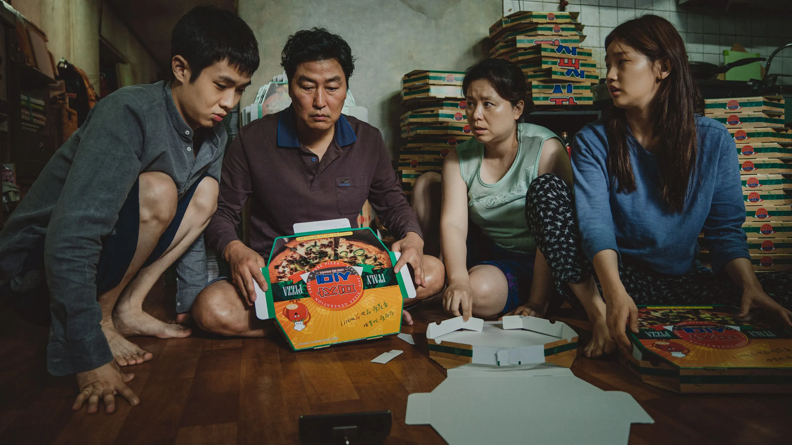

Parasite is a 2019 South Korean black comedy thriller film directed by Bong Joon Ho, who co-wrote the screenplay with Han Jin-won. The film follows a poor family who infiltrate the home and life of a wealthy family.
The script is based on a play Bong wrote in 2013. He later adapted it into a 15-page film draft, which was split into three different drafts by Han. Filming ran from May to September 2018 and included cinematographer Hong Kyung-pyo, editor Yang Jin-mo, and composer Jung Jae-il. Parasite premiered on 21 May 2019 at the Cannes Film Festival, where it became the first Korean film to win the Palme d'Or. Among its numerous accolades, Parasite won the Academy Award for Best Picture at the 92nd Academy Awards, becoming the first non-English-language film to do so.

The main themes of Parasite are class conflict, social inequality and wealth disparity. Film critics and Bong Joon Ho himself have considered the film a reflection of late-stage capitalism, and some have associated it with the term "Hell Joseon", a satirical phrase that posits that living in hell would be akin to living in modern South Korea. The film also analyses the use of connections and qualifications to get ahead, for rich and poor families alike.Parasite is brilliant in a way that feels almost surgical—precise, intentional, and impossibly beautiful even in its brutality. Every frame is composed like a painting: clean lines, controlled color, architecture that becomes a character on its own. The camera doesn’t just show the story; it guides you through it, gliding between levels of the house the same way the narrative slides between social classes. Light and shadow are used like language—revealing, hiding, exposing the inequalities stitched into the world.
 The cinematography is breathtaking because it’s not showy. It’s
intelligent. The way the stairs divide the rich and the poor.
The way rain becomes both disaster and cleansing.
The way the camera lingers just long enough to make you
uncomfortable, then cuts away a moment before you can settle.
The cinematography is breathtaking because it’s not showy. It’s
intelligent. The way the stairs divide the rich and the poor.
The way rain becomes both disaster and cleansing.
The way the camera lingers just long enough to make you
uncomfortable, then cuts away a moment before you can settle.
And the plot—sharp, tragic, darkly funny—unfolds like a trap you didn’t realize you stepped into. It begins with charm and hustle, then slowly tightens into tension so electric you almost forget to breathe. Every twist feels inevitable yet shocking, as if the film already knew the truth about human desperation and was simply waiting for you to catch up.
Parasite is beautiful because it’s fearless. It exposes inequality without preaching, tells the truth without exaggeration, and turns an ordinary home into the stage for one of the most unforgettable stories ever told. It’s a masterpiece that stays with you—quietly, deeply, hauntingly—long after the screen goes dark.